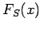
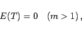
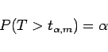
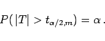

Inhalt Index DeskTop Bronstein

 Wahrscheinlichkeitsrechnung und Mathematische Statistik Wahrscheinlichkeitsrechnung Stetige Verteilungen
Wahrscheinlichkeitsrechnung und Mathematische Statistik Wahrscheinlichkeitsrechnung Stetige Verteilungen


STUDENT-Verteilung oder t-Verteilung mit m Freiheitsgraden. Die Verteilungsfunktion wird mit , die zugehörige Dichte mit fS(t) bezeichnet. Es gilt:
|  | (16.102a) |
|  | (16.103a) |
oder
|  | (16.103b) |
Die Quantile der STUDENT-Verteilung sind in der zugehörigen Tabelle STUDENT-Verteilung zu finden.
Das Einsatzgebiet der STUDENT-Verteilung, die von GOSSET unter dem Pseudonym STUDENT eingeführt wurde, sind Stichproben mit geringem Umfang  , für die nur Schätzwerte des Erwartungswertes und der Standardabweichung angegeben werden können. Die Standardabweichung der Grundgesamtheit ist in (16.103b) nicht mehr enthalten.
, für die nur Schätzwerte des Erwartungswertes und der Standardabweichung angegeben werden können. Die Standardabweichung der Grundgesamtheit ist in (16.103b) nicht mehr enthalten.